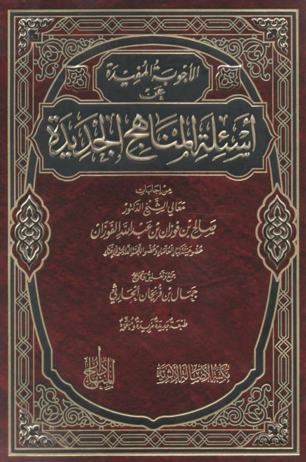

Lessons at Salafi Publications
Non-Copyrighted PDF's in English & Arabic
This page will be frequently updated with current books which are being taught at SPubs Birmingham
Click Here to Listen Live
Visit Salafi Publications X Page for weekly updates on Live lessonsCurrent Lessons
PDF's with Ongoing Lessons

Thalathat Al Usool
The Three Fundamental Principles by Shaykh Al-Islam Muhammad Ibn Abdul Wahhab
Taught by Abu Idrees - Mondays
Shaykh Al Fawzan Explanation - English
Shaykh Al Fawzan Explanation - Arabic
Shaykh Ibn Baz Explanation - Arabic
Lessons
Arba'een An-Nawawi
40 Hadith by Imam an-Nawawi
Taught by Abu Idrees - Tuesdays
Shaykh Ibn Uthaymeen Explanation - Arabic
Shaykh Abdul Muhsin Explanation - Arabic
Lessons

Full Text - Arabic
Lessons
Al Ajwibah Al Mufeedah ‘An As-ilat Al Manaahij Al Jadeedah
Beneficial Answers to Questions on Innovated Methodologies by Shaykh Salih al Fawzan
Taught by Abu Khadeejah - Wednesdays
Full Text - Arabic
Lessons
Shuroot wal Arkaan wa Waajibaat as-Salah
The Conditions, Pillars and Obligations of the Prayer by Shaykh Al-Islam Muhammad Ibn Abdul Wahhab
Taught by Abu Idrees - Thursdays
Full Text - English
Lessons
Sunan Ibn Majah
Kitab As Sunnah - Volume 1 Page 73
Taught by Abu Khadeejah - Fridays
Full Text - English
Lessons